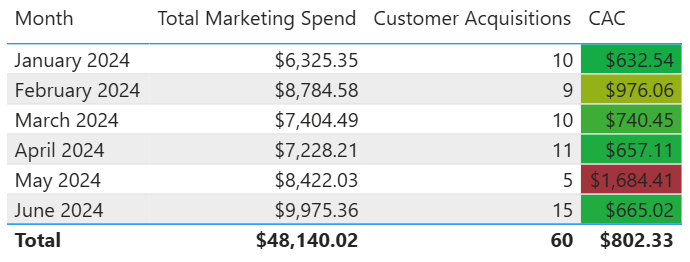

Customer Acquisition Cost (CAC)
Description
Customer Acquisition Cost (CAC) measures the average cost of acquiring a new customer over a defined period. It includes all sales and marketing expenses associated with customer acquisition, divided by the number of new customers acquired during that time.
Visual Example

DAX Formula
Usage Notes
- Ensure that marketing costs and customer acquisition counts are filtered over the same time period.
- Use a shared Date table to allow time intelligence functions like monthly or quarterly CAC.
- Pair CAC with CLV (Customer Lifetime Value) to assess marketing ROI.